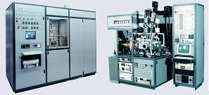

Chemical Vapor
Deposition (CVD)
Chemical Vapor Deposition (CVD)
refers to
the formation of a non-volatile solid film on a substrate from the
reaction of vapor phase chemical reactants containing the right
constituents. A reaction chamber is used for this process, into
which the reactant gases are introduced to decompose and react with the
substrate to form the film.
Chemical vapor deposition is
used in a multitude of semiconductor wafer fabrication processes, including the production of
amorphous and polycrystalline thin films (such as polycrystalline
silicon), deposition of SiO2 (CVD SiO2)
and silicon nitride, and growing of single-crystal
silicon epitaxial layers.
A basic CVD process consists
of the following
steps: 1) a predefined mix of reactant gases and diluent inert gases are introduced at a specified flow rate into the
reaction chamber; 2) the gas species move to the substrate;
3) the reactants get adsorbed on the surface of the substrate; 4) the
reactants undergo chemical reactions with the substrate to form the
film; and 5) the gaseous by-products of the reactions are desorbed and
evacuated from the reaction chamber.
During the
process of chemical vapor deposition, the reactant gases not only react
with the substrate material at the wafer surface (or very close to it),
but also in gas phase in the reactor's atmosphere. Reactions that
take place at the substrate surface are known as
heterogeneous
reactions, and are selectively occurring on the heated surface of the
wafer where they create good-quality films.
Reactions
that take place in the gas phase are known as
homogeneous
reactions. Homogeneous reactions form gas phase aggregates of the
depositing material, which adhere to the surface poorly and at the same
time form low-density films with lots of defects. In short,
heterogeneous reactions are much more desirable than homogeneous
reactions during chemical vapor deposition.
A typical
CVD
system
consists of the following parts: 1) sources of and feed
lines for gases; 2) mass flow controllers for metering the gases into
the system; 3) a reaction chamber or reactor; 4) a system for heating up
the wafer on which the film is to be deposited; and 5) temperature
sensors.
|
 |
|
Figure 1.
Examples of CVD Systems |
There are
many ways of describing or classifying a CVD reactor. For
instance, a reactor is said to be
'hot-wall'
if it
uses a heating system that heats up not only the wafer, but the walls of
the reactor itself, an example of which is radiant heating from
resistance-heated coils. 'Cold-wall'
reactors use heating systems that minimize the heating up of the reactor
walls while the wafer is being heated up, an example of which is heating
via IR lamps inside the reactor. In hot-wall reactors, films are
deposited on the walls in much the same way as they are deposited on
wafers, so this type of reactor requires frequent wall cleaning.
Another way
of classifying CVD reactors is by basing it on the range of their
operating pressure.
Atmospheric
pressure CVD
(APCVD)
reactors operate at atmospheric pressure, and are therefore the simplest
in design.
Low-pressure
CVD (LPCVD)
reactors operate at medium vacuum (30-250 Pa) and higher temperature
than APCVD reactors.
Plasma
Enhanced CVD
(PECVD) reactors also operate under low pressure, but do not depend
completely on thermal energy to accelerate the reaction processes. They
also transfer energy to the reactant gases by using an RF-induced glow
discharge.
The glow
discharge used by a PECVD reactor is created by applying an RF field to
a low-pressure gas, creating free electrons within the discharge region.
The electrons are sufficiently energized by the electric field that
gas-phase dissociation and ionization of the reactant gases occur when
the free electrons collide with them. Energetic species are then
adsorbed on the film surface, where they are subjected to ion and
electron bombardment, rearrangements, reactions with other species, new
bond formation, and film formation and growth.
Table 1
compares the characteristics of typical APCVD, LPCVD, and PECVD
reactors.
Table 1.
APCVD, LPCVD, and PECVD Comparisons
|
CVD Process |
Advantages |
Disadvantages |
Applications |
|
APCVD |
Simple,
Fast
Deposition,
Low
Temperature |
Poor Step
Coverage,
Contamination |
Low-temperature Oxides |
|
LPCVD |
Excellent
Purity,
Excellent
Uniformity,
Good Step
Coverage,
Large
Wafer Capacity |
High
Temperature,
Slow
Deposition |
High-temperature Oxides, Silicon Nitride, Poly-Si, W, WSi2 |
|
PECVD |
Low
Temperature,
Good Step
Coverage |
Chemical
and Particle Contamination |
Low-temperature Insulators over Metals, Nitride Passivation |
See Also:
Epitaxy;
Dielectric;
Polysilicon;
Thin
Films; PVD
By Sputtering; PVD
by Evaporation
HOME
Copyright
© 2001-2005
www.EESemi.com.
All
Rights Reserved.